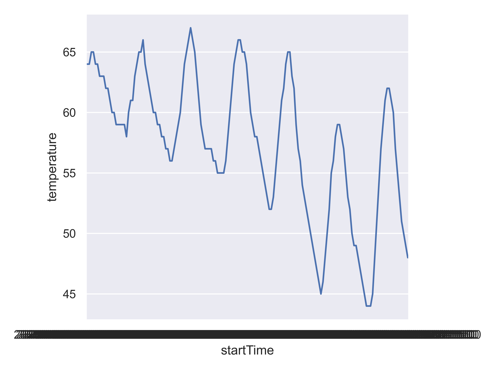

curl -v https://api.genderize.io?name=Terry > ../data/genderize-api-response.txt 2> ../data/genderize-api-curl-output.txt
## Error in running command bash35 Application Programming Interfaces
35.1 Objectives
- Understand what APIs are and how to interface with them
- Connect to RESTful APIs with and without authentication
- Retrieve and parse data from API queries
- Handle common API challenges (pagination, rate limits, errors)
35.2 Introduction to APIs
An API is an application programming interface. APIs are designed to let different software and databases communicate with each other. Statisicians and data scientists often need to access APIs to acquire data from an external source. In the past, I’ve used APIs to get weather data, information about adoptable pets in my area, CRAN package statistics, and wikipedia entry edits, but other people might use them to get data on financial market performance, social media posts, and more.
35.2.1 RESTful APIs
Most APIs are RESTful – they use the REST architecture (REST stands for Representational State Transfer) [1].
Six guiding principles of RESTful architecture
-
Uniform interface.
- The interface uniquely identifies each resource involved in the interaction between the client (you) and the server (the data).
- The server provides a uniform representation of the data that the client can use to modify the resource state.
- Each resource representation should have enough information to describe itself and additional actions that are available.
- The client should have only the initial URI of the application, and should dynamically interact with the server through the use of hyperlinks.
Client-Server. This enforces a separation of concerns so that the user interface (client-side) is separate from the server interface (data storage, platform, dependencies).
Statelessness. Each request from client to server contains all information necessary to understand and complete the request. That is, the server cannot use previously stored information to complete a request. The client application must maintain the entire session state.
Cacheable. A response should (implicitly or explicitly) label itself as cacheable or non-cacheable. If cacheable, the client can reuse the response data for equivalent requests (within a certain time period).
Layered system. The architecture is hierarchical, and each component cannot “see” beyond the immediate layer it is interacting with.
Code on demand (optional). This allows client functionality to be extended by downloading and executing code.
REST abstracts information into a resource, which can change state over time. At any given time, the resource state is the resource representation and consists of the data, metadata about the data, and the links that help a client transition to another state.
A REST API consists of interlinked resources, known as the resource model.
Think about a set of tables in a database, where the tables are linked. A REST API is a set of syntax that allows you to access the table data using a consistent set of addresses that are called Resource URIs
A URI (Universal Resource Identifier) is the more updated term for a URL (Universal Resource Locator). Any URI that starts with https:// or ftp:// or mailto:// is a URL – that is, all URLs are also URIs. 1
A URI will typically have an endpoint (the server address) along with parameters tacked on after the final /. The start of the parameter string is indicated with ?, and parameters are separated by & characters. The parameters often take the form of key-value pairs, so you might have a parameter string that looks like this: ?param1=value1¶m2=value2. URIs cannot accommodate certain characters, such as spaces – these must be encoded using ASCII values [3]. %20 is the equivalent for a space, which is why you will often see it in URLs. Not all values in the linked ASCII table need to be encoded – this usually applies to certain special characters like /, -, , (, and ).
While most RESTful applications use HTTP methods and an API built around what look like web addresses, this is not required.
35.2.2 HTTP Methods
There are several HTTP methods which are commonly used to interact with APIs [4]:
GET - requests the representation of a resource. These requests should only retrieve data and should not contain a request content. Your web browser submits a GET request every time you type an address in the address bar.
POST - submits an entity to a resource. This may cause a change in state or side effects on the server. For instance, submitting a web form may create a POST request that uploads your data to the server and updates a database.
PUT - this method replaces all representations of the target resource with the request content. This updates existing data (that is, be careful!)
DELETE - this method removes all of the target resource data.
HTTP requests have a request header and a request body.
35.2.3 HTTP Response Codes
HTTP requests will return a response code.
In general, 2xx is Success, 3xx is ‘address moved’, 4xx is ‘client screwed up’, and 5xx is ‘server screwed up’, but you can find a full list here. You’re probably familiar with a 404 error, which
35.3 Accessing APIs without Authentication
Demo: CURL and HTTP Requests
Let’s try this out using curl, which is a command-line tool for URI manipulation and transfers. We’ll send a request to an API that takes a person’s name as a parameter and returns information about the likely gender of that person. Explore the API documentation.
I’ve told curl to be verbose (to show us everything).
The first > redirects the response/output to genderize-api-response.txt; 2> redirects the messages/errors/warnings to genderize-api-curl-output.txt. This allows us to examine the response and the output separately.
The first few lines of the output (1-42) are what’s required to make a connection using SSL (essentially, when you use https:// instead of http://, you add an extra security layer where the protocol verifies that the server is certified to be what it claims to be).
Then, there’s a GET request:
* Connected to api.genderize.io (165.227.126.8) port 443
* using HTTP/2
* [HTTP/2] [1] OPENED stream for https://api.genderize.io/?name=Terry
* [HTTP/2] [1] [:method: GET]
* [HTTP/2] [1] [:scheme: https]
* [HTTP/2] [1] [:authority: api.genderize.io]
* [HTTP/2] [1] [:path: /?name=Terry]
* [HTTP/2] [1] [user-agent: curl/8.11.0]
* [HTTP/2] [1] [accept: */*]
} [5 bytes data]
> GET /?name=Terry HTTP/2
> Host: api.genderize.io
> User-Agent: curl/8.11.0
> Accept: */*
>
{ [5 bytes data]
* Request completely sent off
{ [5 bytes data]This splits the URI up into a Host (api.genderize.io) and a query string (/?name=Terry) containing parameter(s) (name) and value(s) (Terry) with an associated protocol (HTTP/2). Curl identifies itself as having the user-agent curl/8.11.0, and provides some idea of what responses it’s looking for - in this case, */*, which is internet for “anything”. At this point, we’re not picky, and in any case, most sites have a default or use JSON exclusively.
The output also contains a set of header information that is easier for us to read when it is formatted as a list. Remember, HTTP responses have a header and a body – this is a formatted version of the header of the server response.
- http/2 200 (response code)
- server: nginx/1.16.1 (web server software version)
- date (varies)
- content-type: application/json; charset=utf-8 (expect a JSON file with encoding UTF-8)
- content-length: 65 (how many characters the content is)
- vary: accept-encoding
- cache-control: max-age=0, private, must-revalidate
- x-request-id (varies)
- access-control-allow-credentials: true (whether you’re allowed to make requests to the server)
- access-control-allow-origin: *
- access-control-expose-headers: x-rate-limit-limit, x-rate-limit-remaining, x-rate-limit-reset (values determining whether we’re putting too much load on the server)
- x-rate-limit-limit: 100
- x-rate-limit-remaining: 91 (varies)
- x-rate-limit-reset: 10538
Then, we look at the body of the server response
{"count":89955,"name":"Terry","gender":"male","probability":0.75}Notice that this has 65 characters and is in JSON format. We get a frequency (count), the name we were checking up on, the likely gender, and the probability that someone with that name is of that gender (in this case, male).
Example: CURL requests in R and Python
Both R and Python use CURL as a backend to interact with the internet at large, but it is often easier to send requests using a request-specific library, such as httr2.
Let’s connect to the Evil Insult Generator API and get one insult from R in Greek (lang=el) in XML (type=xml) and one from Python in Russian (lang=ru), formatted as JSON (type=json).
Please note that I have no idea how evil/off-color these insults might be, but the idea of an API just to insult you (in many languages) is amusing enough to demonstrate even at the risk that it is crude. We’re requesting these in non-English languages in the hopes of minimizing the offense (though the comment in the response gives a rough translation). If you are fluent in Russian or Greek, please feel free to substitute Spanish (es), German (de), French (fr), Greek (el), Russian (ru), Chinese (zh), Hindi (hi), Polish (pl), or another language of your choice. I think this API is using ISO 639 2-letter language codes, and it will return a string of asterisks if it doesn’t understand your language – it doesn’t seem to have insults in every possible language, but I’ve verified a few modern/common ones.
Make sure you have the httr2 library installed (it’s a dependency of a lot of tidyverse packages, so you may already have it).
library(httr2)
req <- request("https://evilinsult.com/generate_insult.php/?lang=el&type=xml") |>
req_perform()
## Error in `req_perform()`:
## ! HTTP 421 Misdirected Request.
resp_raw(req) # response header and body
## Error: object 'req' not found
xml_resp <- resp_body_string(req) # response body, encoded as a string
## Error: object 'req' not found
library(xml2)
read_xml(xml_resp)
## Error: object 'xml_resp' not foundIn Python, make sure you have the requests library installed.
import requests
req = requests.get("https://evilinsult.com/generate_insult.php/?lang=ru&type=json")
req.headers
## {'Server': 'nginx', 'Date': 'Fri, 25 Jul 2025 22:47:54 GMT', 'Content-Type': 'text/html; charset=iso-8859-1', 'Content-Length': '322', 'Connection': 'keep-alive', 'X-Frame-Options': 'SAMEORIGIN', 'X-Content-Type-Options': 'nosniff'}
req.json() # python will format JSON as a dict, which is easier to work with
## requests.exceptions.JSONDecodeError: Expecting value: line 1 column 1 (char 0)Interestingly, you can also pass the undocumented parameter number and get a non-random insult, but this seems to only work in the web browser - the API appears to return a random insult even when number is specified.
Example: Weather Data
The National Weather Service provides a free API for public weather data access. The only requirement is that you provide a user-agent identifying your application and including contact information (an email address). Assemble the temperature forecast data for Moore, OK (lat = 35.339508, long = -97.486702) and plot it using a line graph. You may need to make several requests to get the data you want.
library(httr2)
uastring <- "R/python data science demos, svanderplas2@unl.edu" # Set this to YOUR email, please!
pointsreq <- request("https://api.weather.gov/points/35.339508,-97.486702") |>
req_user_agent(uastring) |>
req_perform()
pointsjson <- resp_body_json(pointsreq)
args <- pointsjson$properties[c("gridId", "gridX", "gridY")] # This will get us the forecast info
req_url_str <- sprintf("https://api.weather.gov/gridpoints/%s/%s,%s/forecast/hourly", args[1], args[2], args[3])
forecastreq <- request(req_url_str) |>
req_user_agent(uastring) |>
req_perform()
forecastjson <- resp_body_json(forecastreq)
forecastjson$properties$periods[[1]]
## $number
## [1] 1
##
## $name
## [1] ""
##
## $startTime
## [1] "2025-07-25T17:00:00-05:00"
##
## $endTime
## [1] "2025-07-25T18:00:00-05:00"
##
## $isDaytime
## [1] TRUE
##
## $temperature
## [1] 96
##
## $temperatureUnit
## [1] "F"
##
## $temperatureTrend
## [1] ""
##
## $probabilityOfPrecipitation
## $probabilityOfPrecipitation$unitCode
## [1] "wmoUnit:percent"
##
## $probabilityOfPrecipitation$value
## [1] 10
##
##
## $dewpoint
## $dewpoint$unitCode
## [1] "wmoUnit:degC"
##
## $dewpoint$value
## [1] 21.11111
##
##
## $relativeHumidity
## $relativeHumidity$unitCode
## [1] "wmoUnit:percent"
##
## $relativeHumidity$value
## [1] 43
##
##
## $windSpeed
## [1] "12 mph"
##
## $windDirection
## [1] "SSE"
##
## $icon
## [1] "https://api.weather.gov/icons/land/day/few?size=small"
##
## $shortForecast
## [1] "Sunny"
##
## $detailedForecast
## [1] ""
library(lubridate)
moore_temps <- tibble(start_time = map_vec(forecastjson$properties$periods, "startTime"),
temp = map_vec(forecastjson$properties$periods, "temperature")) |>
mutate(start_time = ymd_hms(start_time))
## Error in mutate(tibble(start_time = map_vec(forecastjson$properties$periods, : could not find function "mutate"
library(ggplot2)
ggplot(moore_temps, aes(x = start_time, y = temp)) + geom_line()
## Error: object 'moore_temps' not foundimport requests
import pandas as pd
import seaborn.objects as so
# PLEASE edit this to have your email address before you run the code.
headers = {'User-Agent': 'R/python data science API demos', 'From': 'svanderplas2@unl.edu'}
pointsreq = requests.get("https://api.weather.gov/points/35.339508,-97.486702", headers=headers)
pointsreq.headers
## {'Server': 'nginx/1.20.1', 'Content-Type': 'application/geo+json', 'X-Powered-By': 'PHP/8.0.30', 'Access-Control-Allow-Origin': '*', 'Access-Control-Expose-Headers': 'X-Correlation-Id, X-Request-Id, X-Server-Id', 'X-Request-ID': 'a722401c-1db3-4166-8076-35ec879a6a19', 'X-Correlation-ID': '1e573c0d', 'X-Server-ID': 'vm-lnx-nids-apiapp14.ncep.noaa.gov', 'Content-Encoding': 'gzip', 'Content-Length': '799', 'Cache-Control': 'public, max-age=85366, s-maxage=120', 'Expires': 'Sat, 26 Jul 2025 22:30:42 GMT', 'Date': 'Fri, 25 Jul 2025 22:47:56 GMT', 'Connection': 'keep-alive', 'Vary': 'Accept-Encoding, Accept,Feature-Flags,Accept-Language', 'X-Edge-Request-ID': '3934dee6', 'Strict-Transport-Security': 'max-age=31536000 ; includeSubDomains ; preload'}
points_json = pointsreq.json()
target_url = points_json['properties']['forecast']+'/hourly'
forecastreq = requests.get(target_url, headers=headers)
forecast_json = forecastreq.json()
forecast_df = pd.DataFrame(forecast_json['properties']['periods'])
forecast_temp = forecast_df[['startTime', 'temperature']]
so.Plot(forecast_temp, "startTime", "temperature").add(so.Line()).show()
The x-axis is a bit of a mess because I haven’t spent the time to format it properly, but that’s good enough for now.
35.4 API Authentication
Many APIs require authentication to get response codes other than 4xx (unauthorized). Authentication helps API providers ensure that it’s more difficult for users to spam the service and tie up resources. In some cases, you may pay to access an API, and the API may track how many requests you make or how much server time you use in order to bill you appropriately2.
There are two common methods APIs use for authentication: key-based authentication, and OAuth 2.0 authentication. In addition to these methods, some APIs implement their own authentication systems that aren’t standard.
Chances are, you’ll have to read the API documentation to figure out how to authenticate, even if they are using a relatively common authentication method.
35.4.1 Storing Secrets Securely
Whether you’re using an API key or OAuth2.0 or some other authentication method, it’s important to make sure you store your secrets (passwords, logins, keys, tokens) securely [6]. There is always a balance between security and convenience (ease of access), though. I don’t guard my password for reddit in the same way that I guard my bank account information or my SSN, because the worst someone can do on reddit with my username is post nonsense or offensive stuff – they can’t bankrupt me.
The solutions for secret storage here are presented roughly from less to more secure (or from more to less convenient). All of these storage methods are preferable to putting the secret directly into your script.
35.4.1.1 Environment files
Most programs have the ability to read in secrets or environment variables using a separate file. The dot at the beginning of the file name indicates that the file is hidden on UNIX-based systems – just an additional tiny bit of security. In R, secrets can be stored in the .Renviron file [7], and Python uses the .env file (using this requires the python-dotenv package, available via pip). The usethis package in R can help you manage your .Renviron file, if you When you create an environment file in your project directory, you should immediately add it to your .gitignore file, so that git never sees the file and there’s no risk that you accidentally add it to your git repository. Even better, you can use the global .gitignore file and ensure that git NEVER sees the file.
You will have to recreate this file on each computer you’re using, though, since it isn’t backed up in git. I will often save my API keys to both the environment file and to my password manager (KeePassXC) so that I have the key stored in an encrypted location that syncs across all of my computers in addition to an environment file.
Environment variables are stored in the form key=value. If your value has spaces, you may want to store them as key="value with spaces" to avoid trouble, but you may not have to do so. Your keys should not have spaces.
35.4.1.1.1 Demo: Environment File Secret Storage and Access
if(!"usethis" %in% installed.packages()){
install.packages("usethis")
} You can manually create and edit the .Renviron file, or you can use the usethis package to do so. The advantage of the usethis package is that it makes it much easier to find the user-level .Renviron file. Personally, I try to use project-level secrets wherever possible, but some things are used across so many projects that it’s easier just to keep them in one place, like my GitHub access token.
library(usethis)
usethis::edit_r_environ("project")
usethis::edit_r_environ("user")- 1
- If you want to store the secrets in your project folder (e.g. in what is likely your working directory)
- 2
- If you want to store the secrets in your user’s folder, which would be accessible from any project on your machine while you’re logged in.
Add these lines to your .Renviron file:
API_KEY=test-key
API_SECRET=test-secretR will automatically load environment variables when the R session is started, but you do need to restart your session after you create or update the .Renviron file in order to access new environment variables.
You can then access the values using Sys.getenv("secret-name")
Sys.getenv("API_KEY")
## [1] "test-key"
Sys.getenv("API_SECRET")
## [1] "test-secret"%pip install python-dotenv
## invalid syntax (<string>, line 1)In a .env file in the project directory, add these lines:
API_KEY=test-key
API_SECRET=test-secretor, run the following code in a UNIX-compatible terminal (Windows users - use git bash):
echo -ne "API_KEY=test-key\nAPI_SECRET=test-secret" >> .envThen, we need to tell Python to check that file using dotenv.load_dotenv()
from dotenv import load_dotenv
import os
load_dotenv()
## TrueSecrets in the .env file can then be accessed by name.
api_key = os.getenv("API_KEY")
api_secret = os.getenv("API_SECRET")
print("API_KEY: ", api_key)
## API_KEY: test-key
print("API_SECRET: ", api_secret)
## API_SECRET: test-secretYou can also access a dictionary of secrets using the dotenv.dotenv_values() function.
from dotenv import dotenv_values
secrets = dotenv_values(".env")
secrets['API_KEY']
## 'test-key'
secrets['API_SECRET']
## 'test-secret'35.4.1.2 System Credential Storage
All major operating systems ( ) have a system password store available. Both R and Python can interface with this system password storage directly [8], [9], ensuring that your passwords are not stored in plaintext anywhere, including on your machine.
You will need the keyring package in both R and Python to use this functionality.
Demo: System Keyring Secret Storage
install.packages("keyring")With this method, you will typically interactively set the secret value the first time.
Running this command will pop up a window for you to enter the key value directly.
Then, to get the secret back from the keyring, you just need to run key_get("secret-name").
key_get(service = "default", "API_KEY")
## [1] "test-key"If you want to list out the keys which are available using a specific service (names only, no values), you can use key_list(service = "your-service").
Non-default backends
You can set a different backend for storing your secrets if you would like to do so. In most cases, the operating system default is fine, but for instance on my machine, the default is to use environment variables (which is perhaps only slightly more secure than using the environment configuration files in the previous section). As it would also be perfectly reasonable to use my system keyring (KDE Wallet, in my case), I could configure the package to use that service instead.
%pip install keyringimport keyring as kr
# Run this in the python console interactively to leave no trace
kr.set_password("test-service", "API_KEY", "test-key")
kr.get_password("test-service", "API_KEY")
## 'test-key'35.4.1.3 Additional Options
There are other options to store secrets, including cloud secret storage, that are used at the enterprise level but may not be that helpful for you right now. I also found a KeePassXC package for python, but couldn’t find a similar one for R.
If you are using Github Actions to build things, you can emulate environment variable secret storage using custom environment variables for your actions. To my knowledge, you can’t easily use system credential storage in a continuous integration environment.
35.4.2 API Keys
The simplest method of API authentication is a key-based system. You sign up with the API and they issue you (or your application) a key – a sequence of characters that uniquely identifies your user or application.
Keys can be used in two different ways: you either pass the key in with every query (very simple), or you use your key at the start to obtain a token, which you then include with every query or pass along in the request header.
To determine how the key should be used, you will have to read the API documentation. Most APIs will provide you with examples of how you would submit certain queries, so you can often figure out the authentication process from those examples.
35.4.2.1 Demo: API Authentication with NewsAPI
NewsAPI provides access to articles and headlines from around the world. Anyone can sign up for an API key that allows 1000 requests per day while you are developing the application (commercial projects and projects which are “in production” require a paid license).
Sign up for an API key so that you can follow along with this demonstration. Save your API key using your preferred method (or both of the methods) discussed above, using the service “NEWSAPI” and the username “NEWSAPI_KEY”.
The homepage of the API provides several example GET queries (replace <your key> with your API key):
Top business headlines in the US right now:
GET https://newsapi.org/v2/top-headlines?country=us&category=business&apiKey=<your key>Top headlines from TechCrunch right now:
GET https://newsapi.org/v2/top-headlines?sources=techcrunch&apiKey=<your key>All articles published by the Wall Street Journal in the past 6 months, sorted by recent first:
https://newsapi.org/v2/everything?domains=wsj.com&apiKey=<your key>
These examples are often enough to give you a sense of how to construct a query, but for more detail, most sites also provide documentation.
For instance, if we look at the Authentication page, you can see that there are 3 options for using your API key:
- passed in using the
apiKeyquerystring parameter - via the
X-Api-KeyHTTP header - via the
AuthorizationHTTP header
The last two are preferable because they don’t show up in logs, as they’re hidden in the header rather than the URI.
key <- Sys.getenv("NEWSAPI_KEY")
library(httr2)
uastring <- "R/python data science demos, svanderplas2@unl.edu" # Set this to YOUR email, please!
query <- "https://newsapi.org/v2/everything?domains=wsj.com&language=en"
# Option 1: Pass the API Key in using the URI
res1 <- request(paste0(query, "&apiKey=", key)) |>
req_perform()
# Redacting apiKey from various places before printing the object
res1$url <- gsub(key, "<your key>", res1$url)
res1$request$url <- gsub(key, "<your key>", res1$request$url)
res1
## <httr2_response>
## GET https://newsapi.org/v2/everything?domains=wsj.com&language=en&apiKey=<your key>
## Status: 200 OK
## Content-Type: application/json
## Body: In memory (11301 bytes)
res2 <- request(query) |>
req_user_agent(uastring) |>
req_headers_redacted("X-Api-Key" = key) |>
req_perform()
res2
## <httr2_response>
## GET https://newsapi.org/v2/everything?domains=wsj.com&language=en
## Status: 200 OK
## Content-Type: application/json
## Body: In memory (11301 bytes)
res3 <- request(query) |>
req_user_agent(uastring) |>
req_headers_redacted("Authorization" = key) |>
req_perform()
res3
## <httr2_response>
## GET https://newsapi.org/v2/everything?domains=wsj.com&language=en
## Status: 200 OK
## Content-Type: application/json
## Body: In memory (11301 bytes)Then, we can analyze the response body and re-format it to get rectangular data.
library(jsonlite)
library(dplyr)
library(purrr)
library(tibble)
library(tidyr)
response <- resp_body_string(res1) |>
parse_json(simplifyVector = T)
response <- response$articles |>
unnest_wider("source")
head(response)
## # A tibble: 6 × 9
## id name author title description url urlToImage publishedAt content
## <chr> <chr> <chr> <chr> <chr> <chr> <chr> <chr> <chr>
## 1 the-wall-… The … Heath… McDo… The burger… http… https://s… 2025-07-24… "McDon…
## 2 the-wall-… The … Rory … Why … Highly rea… http… https://i… 2025-07-23… "Kelli…
## 3 the-wall-… The … Patie… AT&T… The compan… http… https://s… 2025-07-23… "AT&am…
## 4 the-wall-… The … Laura… Coke… The bevera… http… https://s… 2025-07-22… "Coca-…
## 5 the-wall-… The … John … The … <NA> http… <NA> 2025-07-20… "Joe F…
## 6 the-wall-… The … Kathe… Amer… American E… http… https://s… 2025-07-18… "Reven…from dotenv import load_dotenv
import os
load_dotenv()
## True
key = os.environ.get('NEWSAPI_KEY', "")
import requests
query = "https://newsapi.org/v2/everything?domains=wsj.com&language=en"
req1 = requests.get(query+"&apiKey="+key)
req2 = requests.get(query, headers={"X-Api-Key": key})
req3 = requests.get(query, headers={"Authorization": key})Then, we can analyze the response body and re-format it to get rectangular data.
import pandas as pd
response = pd.json_normalize(req3.json()['articles'])
response
## author ... source.name
## 0 Heather Haddon ... The Wall Street Journal
## 1 Rory Satran ... The Wall Street Journal
## 2 Patience Haggin ... The Wall Street Journal
## 3 Laura Cooper and Dean Seal ... The Wall Street Journal
## 4 John Gruber ... The Wall Street Journal
## 5 Katherine Hamilton ... The Wall Street Journal
## 6 Kwanwoo Jun ... The Wall Street Journal
## 7 Alison Sider ... The Wall Street Journal
## 8 Paul Hannon ... The Wall Street Journal
## 9 Laura Saunders ... The Wall Street Journal
## 10 Anna Wilde Mathews ... The Wall Street Journal
## 11 Roshan Fernandez and Joe Pinsker ... The Wall Street Journal
## 12 Mauro Orru ... The Wall Street Journal
##
## [13 rows x 9 columns]35.4.3 OAuth 2.0
Under Construction
This section is still under construction, as I’ve had trouble finding a ton of compelling examples of why you should use OAuth instead of API key authentication.
You should, however, understand the basic premise of OAuth authentication, even if we don’t use it to access data.
Key-based authentication is reasonably secure, but it is hard to guard against keys being shared or used by others if they are exposed. Just as passwords are considered less secure than two-factor authentication, API keys are considered less secure than OAuth2.0, a method which requires multiple steps to authenticate:
- User log in
- An authorization code is generated for the application
- The authorization code is exchanged for a limited time access token
- The token is used to access the API
In addition, API keys do not have any fine-grained way of ensuring that certain users have access to only certain resources. OAuth2.0 allows generation of fine-grained, limited scope permissions – for instance, you might be allowed to read information but not write it, or read only information relating to certain variables.
You’re already likely familiar with OAuth2.0, because that’s how the “Sign in with Google/Facebook/Github” links work on various sites (here’s a list of OAuth providers). You authorize the application to see that you have a pre-existing profile from another site, and you may also allow the application to see certain information (name, profile picture, email address, …). The application is given an access token that grants it limited access to your pre-existing profile information, and that is used to allow you access to the application without creating a new profile.
As you might expect, preparing to use OAuth 2.0 authentication is a bit more complicated than just getting an API key. In addition, it will vary by API, so you need to carefully read the documentation. I can’t provide a demo that is going to work for all APIs out there, unfortunately.
35.4.3.1 Demo: Using Github’s API
- Navigate to https://github.com/settings/developers and click on OAuth Apps
- Create a New Oauth App by clicking the button in the top right corner
{kind=link}
- Fill in the OAuth application form. OAuth is usually used for web applications, so some of these values don’t quite make sense for our data-gathering purposes – and that’s ok.
- Application name:
oauth-testingis a good option - Homepage URL:
https://github.com/<username>(fill in your username) is a good option - Authorization Callback URL: Use the same URL as you used above.
- Click Register when you’re done.
- Application name:
{kind=link}
- You should be redirected to your application page, and it should look something like Figure 35.3 (I’ve censored my client ID, but yours should be readable). Click on the ‘Generate a new client secret’ button. Using your preferred secret storage method, save both your client ID and client Secret to your computer – if using a keyring, providing an ID of “
GH_API” along with a username of “CLIENT_ID” and a password of “CLIENT_SECRET” should work. If using an environment file, just saveGH_APP_ID=...andGH_APP_SECRET=...separately.
{kind=link}
Scroll to the bottom of your app page and select ‘Enable Device Flow’ - this will hopefully allow you to use
Use the documentation (or LLMs like Copilot/GPT) to figure out how to authenticate for your specific API. Note that LLMs will be most useful for common APIs.
I’m using environment variables to store my client ID and secret, so I will access them like this:
client_id <- Sys.getenv("GH_APP_ID")
secret <- Sys.getenv("GH_APP_SECRET")library(httr2)
# Step 1: Define the OAuth client
client <- oauth_client(
id = client_id, # Replace with your GitHub App's client ID
secret = secret, # Replace with your GitHub App's client secret
token_url = "https://github.com/login/oauth/access_token"
)This next bit is interactive, so I can’t really easily demonstrate it for you here. Sorry!
# Step 2: Set up the authorization flow
auth <- oauth_flow_auth_code(
client = client,
auth_url = "https://github.com/login/oauth/authorize",
scope = "repo" # Example scope: access to repo
)If this succeeds, then you’ll be able to submit the next request successfully and get Hadley Wickham’s user information.
# Step 3: Create a request using the token
req <- request("https://api.github.com/users/hadley") |>
req_auth_bearer_token(auth$access_token)
# Step 4: Perform the request
resp <- req_perform(req)# Step 5: Print the response
resp |>
resp_body_json() |>
head()
## $login
## [1] "hadley"
##
## $id
## [1] 4196
##
## $node_id
## [1] "MDQ6VXNlcjQxOTY="
##
## $avatar_url
## [1] "https://avatars.githubusercontent.com/u/4196?v=4"
##
## $gravatar_id
## [1] ""
##
## $url
## [1] "https://api.github.com/users/hadley"You will need the requests package for this demo, which you can obtain with pip install requests.
from requests_oauthlib import OAuth2Session
import os
from dotenv import load_dotenv
load_dotenv()
# Step 1: Define your credentials
client_id = os.getenv("GH_APP_ID")
client_secret = os.getenv("GH_APP_SECRET")
redirect_uri = "https://localhost" # Must match your app settings
# Step 2: Define OAuth endpoints
authorization_base_url = "https://github.com/login/oauth/authorize"
token_url = "https://github.com/login/oauth/access_token"
# Step 3: Create an OAuth2 session
github = OAuth2Session(client_id, redirect_uri=redirect_uri, scope=["repo"])
# Step 4: Redirect user to GitHub for authorization
authorization_url, state = github.authorization_url(authorization_base_url)print(f"Visit this URL and authorize: {authorization_url}")
## Visit this URL and authorize: https://github.com/login/oauth/authorize?response_type=code&client_id=Ov23li2ClKXHmZzjlJik&redirect_uri=https%3A%2F%2Flocalhost&scope=repo&state=OV6agqUeiFjyXciNqSr0bnY7ZB4FuL
# Step 5: Get the authorization response URL manually (paste it into the quotes)
redirect_response = "https://localhost/?code=f188b7e06bf0dca942e8&state=OV6agqUeiFjyXciNqSr0bnY7ZB4FuL"# Step 6: Fetch the access token
token = github.fetch_token(token_url, client_secret=client_secret,
authorization_response=redirect_response)
# Step 7: Make an authenticated API call
response = github.get("https://api.github.com/users/hadley")print(response.json())
## AttributeError: 'DataFrame' object has no attribute 'json'Note that in both cases, the OAuth libraries (httr2, requests_oauthlib) handle passing the token to the requests - we don’t have to do that manually.
35.5 Best Practices
When working with APIs, make sure to:
- Read the API documentation carefully
- Test with small requests first before scaling up
- If something doesn’t work in R/Python, test with curl or in a browser
- Secure your API keys using keyrings or environment variables. Do NOT push your API keys to GitHub!!!
- Cache responses to limit server overload
- Write reusable functions to make API calls where possible
35.6 Fun APIs To Explore
PokeAPI - An API for accessing all of the Pokemon data you could ever want, and Pokemon TCG if you prefer the card game over the critters themselves.
HolidayAPI - An API of holidays in every country worldwide.
CheapShark - price data for digital PC games from different stores and sales.
UPC Database - access UPCs for millions of products around the world
PurpleAir - real time air quality monitoring network
OpenChargeMap - Electric vehicle charging stations, worldwide.
NASA Open APIs - one key, hundreds of different possibilities, including imagery.
Polygon.io API for financial data
Public API List – a massive list of public APIs
References
[1]
L. Gupta, “What is REST? REST API tutorial,” Apr. 01, 2025. [Online]. Available: https://restfulapi.net/. [Accessed: Jul. 07, 2025]
[2]
B. Zimmerman, “URI vs. URL. Bernie zimmerman,” May 14, 2020. [Online]. Available: https://web.archive.org/web/20200514092752/http://www.bernzilla.com/item.php?id=100. [Accessed: Jul. 07, 2025]
[3]
W3Schools, “HTML URL encoding reference,” 2025. [Online]. Available: https://www.w3schools.com/tags//ref_urlencode.asp. [Accessed: Jul. 07, 2025]
[4]
Mozilla Documentation Network, “HTTP request methods. Mdn web docs,” Jul. 04, 2025. [Online]. Available: https://developer.mozilla.org/en-US/docs/Web/HTTP/Reference/Methods. [Accessed: Jul. 07, 2025]
[5]
J. Evans, “Questions about HTTP status codes. Questions: A wizard zines project,” Jun. 08, 2020. [Online]. Available: https://questions.wizardzines.com/http-status-codes. [Accessed: Jul. 11, 2025]
[6]
“INFO 2950 - securely storing API keys. INFO 2950.” [Online]. Available: https://info2950.infosci.cornell.edu/tutorials/store-api-keys.html. [Accessed: Jul. 10, 2025]
[7]
roelpi, “Customizing r: The .renviron file. Roel peters,” Apr. 30, 2020. [Online]. Available: https://www.roelpeters.be/what-is-the-renviron-file/. [Accessed: Jul. 10, 2025]
[8]
“Access the system credential store from r.” [Online]. Available: https://keyring.r-lib.org/index.html. [Accessed: Jul. 10, 2025]
[9]
G. E. G. hires external cybersecurity experts to share their unique experience {and}. knowledge in security on the G. blog M. posts by G. Expert, “How to handle secrets in python. GitGuardian blog - take control of your secrets security,” Jan. 25, 2023. [Online]. Available: https://blog.gitguardian.com/how-to-handle-secrets-in-python/. [Accessed: Jul. 10, 2025]
[10]
K. Sever, “OAuth2 explained with cute shapes. Medium,” Aug. 10, 2022. [Online]. Available: https://engineering.backmarket.com/oauth2-explained-with-cute-shapes-7eae51f20d38. [Accessed: Jul. 11, 2025]
These terms are often mixed up and this has been an issue since at least 2003 [2].↩︎
It’s fairly common for people who are new to working with the ChatGPT AI to accidentally push their keys to github, and then post about it, wondering why they have no credits left in their account. BE CAREFUL when using APIs and version control - you need to always make sure your keys are stored securely and not pushed to version control.↩︎